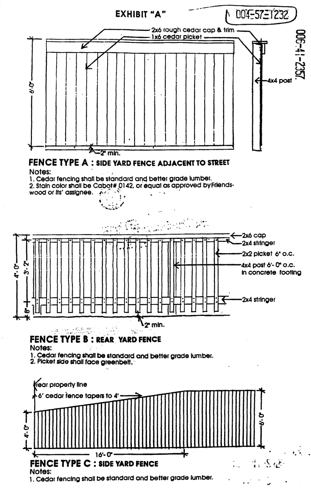

KINGS POINT VILLAGE, SECTION SIX PROTECTIVE COVENANTS
Note: Rerecorded to correct scrivener's error on Page 5. File Number: N375769; N394347 Filed: 10/22/91; 11/04/91 County: Harris County, Texas
KNOW ALL MEN BY THESE PRESENTS:
THAT FRIENDSWOOD DEVELOPMENT COMPANY, an Arizona corporation with a permit to do business in the State of Texas, having an office at 700 Rockmead Drive, Suite 110, Kingwood, Harris County, Texas, and KING RANCH, INC., a Texas corporation with its office and principal place of business in Kleberg County, Texas, hereinafter jointly called "Friendswood", being the owners of that certain tract of land, containing 86.686 acres out of the Amasa Turner Survey, A-757, Harris County, Texas, being an unincorporated area situated within the extraterritorial jurisdiction of the City of Houston, which Friendswood has platted into a subdivision known as Kings Point Village, Section Six, a map or plat of said subdivision, approved as required by law, having been filed for record and being recorded under Film Code No. 350045 in the Map Records of Harris County, Texas, to which reference is here made for all purposes, does hereby establish, adopt and promulgate the following Protective Covenants which shall be applicable only to the lots as shown in said subdivision plat, and not to any of the Unrestricted or Restricted Reserves shown thereon:
PART I
1. Each lot shall be used for single-family residence purposes, and no such residence shall be constructed on less than the equivalent of one full lot.
2. No building shall be erected, altered or permitted to remain on any lot other than one detached single-family residential dwelling not to exceed two (2) stories in height, and a private garage for not more than three (3) cars and bona fide servants' quarters, which structure shall not exceed the main dwelling in height or number of stories.
3. No building, shed, playhouse or such accessory structure or improvements of any character shall be erected or placed, or the erection thereof begun, or changes made in the design thereof after original construction, (including, but not by way of limitation, reroofing materials and the color thereof), on any lot until the construction plans and specifications and a plan showing the location of the structure or improvements have been submitted to and approved in writing by Friendswood, or its assignee hereinafter provided for. Such approval shall be as to compliance with these restrictions, the applicable Minimum Construction Standards adopted and promulgated from time to time by Friendswood, or its assignee, for such subdivision, and as to quality of materials, harmony of external design with existing and proposed structures, and as to location with respect to topography and finish grade elevation. Such approval shall not indicate Friendswood's approval for any other purpose and specifically, but without limitation, shall not be construed as any representation by Friendswood as to, or responsibility for, the design or quality of the improvements or the ultimate construction thereof. In the event Friendswood or its assignee fails to approve or disapprove such plans and specifications within thirty (30) days after the actual receipt thereof, approval shall not be required and the related covenants set out therein shall be deemed to have been fully satisfied.
Utility companies furnishing electric, gas, telephone and audio-visual communications services in the subdivision shall have easements granted by recorded instruments and/or as shown on the recorded subdivision plat. Further, an electric distribution system has been installed in Kings Point Village, Section Six, which service area embraces all of the lots which are platted in Kings Point Village, Section Six, by the execution of an agreement between Houston Lighting & Power Company and Friendswood. This electrical distribution system consists of overhead primary feeder circuits constructed on wood or steel poles, single or three phase, as well as underground primary and secondary circuits, pad mounted or other types of transformers, junction boxes, and such other appurtenances necessary to make underground service available.
The owner of each lot containing a single dwelling unit shall, at its own cost, furnish, install, own and maintain (all in accordance with the National Electrical Code) the underground service cable and appurtenances from the point of electric company's metering at the structure to the point of attachment at such company's installed transformers or energized secondary junction boxes, such point of attachment made available by the electric company at a point designated by such company at the property line of each lot. The electric company furnishing service shall make the necessary connections at said point of attachment and at the meter. Friendswood has either by designation on the plat of the subdivision or by separate instrument granted necessary easements to the electric company providing for the installation, maintenance and operation of its electric distribution system and has also granted to the various homeowners reciprocal easements providing for access to the area occupied by and centered on the service wires of the various homeowners to permit installation, repair and maintenance of each homeowner's owned, and installed service wires. In addition, the owner of each lot shall at his or its own cost, furnish, install, own and maintain a meter loop (in accordance with the then current Standards and Specifications of the electric company furnishing service) for the location and installation of the meter of such electric company for each dwelling unit involved.
For so long as underground service is maintained in the underground residential subdivision, the electric service to each dwelling unit therein shall be underground, uniform in character and exclusively of the type known as single phase, 120/240 volt, three wire, 60 cycle, alternating current.
The electric company has installed the underground electric distribution system in the underground residential subdivision at no cost to Friendswood (except for certain conduits, where applicable, and except as hereinafter provided) upon Friendswood's representation that the underground residential subdivision is being developed for residential dwelling units designed to be permanently located where originally constructed (such category of dwelling units expressly to exclude mobile homes) which are built for sale or rent.
The provisions of the two preceding paragraphs also apply to any future residential development in Reserve(s) shown on the plat of Kings Point Village, Section Six, as such plat exists at the execution of the agreement for underground electric service between the electric company and Friendswood or thereafter. Specifically, but not by way of limitation, if a lot owner in a former Reserve undertakes some action which would have invoked a front lot foot payment if such action has been undertaken in the underground residential subdivision, such owner or applicant for service shall pay the electric company $1.75 per front lot foot, unless Friendswood has paid the electric company as above described. The provisions of the two preceding paragraphs do not apply to any future non-residential development in such Reserve(s).
Easements for the underground service may be crossed by driveways and walkways provided the developer or builder makes... [text regarding easements continues logically]
No fence shall be of wire or chain link construction. No fence shall be constructed on lots adjoining the greenbelt without prior written approval of Friendswood or its assignee. All lots adjoining the greenbelt will require the fence to be constructed with the finished side toward the greenbelt. The foregoing notwithstanding, fences for the following lots shall conform to the details shown in Exhibit "A" attached hereto, made a part hereof, and incorporated herein for all purposes; or other fencing designs approved by the Architectural Control Committee:
| LOT/BLOCK | FENCE TYPE |
|---|---|
| Lot 1, Block 1 | A |
| Lot 21, Block 1 | B (on rear lot line with bearing N19-05-41E, and C on side lot line with bearing N74-35-51W) |
| Lot 22, Block 1 | B & C |
| Lot 5, Block 2 | A |
| Lots 1-6, Block 9 | B & C |
| Lot 1, Block 12 | B & C or only B |
| Lot 1, Block 14 | A |
| Lots 1-3, Block 15 | B & C |
| Lot 4, Block 15 | A, B, & C |
| Lot 1, Block 16 | A, B, & C |
| Lot 2, Block 16 | B & C |
| Lot 1, Block 17 | A |
12. No object or thing shall be placed or planted on corner lots which obstructs sight lines at elevations between two (2) and six (6) feet above the top of the street curb within the triangular area formed by the junction of street curb lines and a line connecting them at points twenty-five (25) feet from the junction of the street curb lines (or extension thereof).
13. The drying of clothes in public view is prohibited, and the owners or occupants of any lots at the intersection of streets or adjacent to parks, playgrounds or other facilities where the rear yard or portion of the lot is visible to the public shall construct and maintain a drying yard or other suitable enclosure to screen drying clothes from public view.
14. All lots shall be kept at all times in a sanitary, healthful, attractive and safe condition, and the owner or occupant of all lots shall keep all weeds, grass and dead trees thereon cut and shall in no event use any lot for storage of material and equipment except for normal residential requirements or incident to construction of improvements thereon as herein permitted, or permit the accumulation of garbage, trash or rubbish of any kind thereon, and shall not burn any garbage, trash, leaves or rubbish except by use of an incinerator approved by Friendswood, its successors or assigns, and then only during such conditions as permitted by law. All yard equipment, storage piles and woodpiles shall be kept screened by a service yard or other similar facility as herein otherwise provided, so as to conceal them from view of neighboring lots, streets or other property. Woodpiles shall be neatly maintained. In the event of default on the part of the owner or occupant of any lot in observing the above requirements or any of them, such default continuing after ten (10) days written notice thereof, Friendswood or its assignee, may without liability to the owner or occupant in trespass or otherwise, enter upon said lot and cut, or cause to be cut, such weeds and grass, and remove or cause to be removed such garbage, trash and rubbish or do any other thing necessary to secure compliance with these restrictions so as to place said lot in a neat, attractive, healthful, safe and sanitary condition, and may charge the owner or occupant of such lot for the cost of such work.
PART II
1. These covenants are to run with the land, and shall be binding upon Friendswood and its successors and assigns and all persons claiming under them and all subsequent property owners of said above-described lands, and any part of same, for a period of forty (40) years from the date hereof, at which time said covenants shall be extended automatically for successive periods of ten (10) years each, unless an instrument signed by the then owners of a majority of the lots has been recorded, agreeing to change said covenants in whole or in part, or to revoke them, provided, that no person or corporation shall be liable for breach of these covenants and restrictions except in respect to breaches occurring or committed during its, his or their ownership of the property involved in such breach. Deeds of conveyance of said property, or any part thereof, may contain the above restrictive covenants by reference to this document, but whether or not such reference is made, each and all of such restrictive covenants shall be valid and binding upon the respective grantees.
2. Enforcement shall be by proceedings at law or in equity against any person or persons violating or attempting to violate any covenants, either to restrain or prevent such violation or proposed violation by an injunction, either prohibitive or mandatory, or obtain any other relief authorized by law. Such enforcement may be by the owner of any said lots or by Friendswood or its successors or assigns, or by the Association collecting and administering the assessment for Kings Point Community Association. Violation of any provision of these Protective Covenants, or other rule or regulation adopted by Friendswood, the Association, or the Board of Directors of the Association, results in immediate and continuing harm to the community, but accurately assigning or calculating a dollar value for damages arising from such a violation is quite difficult. Therefore, in addition to the foregoing enforcement rights, Friendswood, its successors or assigns, or the Association may impose at its election a fine or penalty of up to $50.00 per day on every violator, as liquidated damages for the harm caused by the violation. Failure to enforce any provision of this Declaration shall not constitute a waiver of the right to enforce such provision or any other provision of this Declaration at a later date.
3. Invalidation of one or more of these covenants by judgement or court order or otherwise, shall in nowise affect any other covenant, restriction or condition, but all such other covenants, restrictions or conditions shall continue and remain in full force and effect.
4. It is specifically provided that a violation of these Protective Covenants, or any one or more of them, shall not affect the lien of any mortgage or deed of trust now of record, or which hereafter may be placed of record, or other lien acquired and held in good faith upon said lots or any part thereof, but such liens may be enforced as against any and all property covered thereby, subject nevertheless to the restrictions, covenants and conditions herein contained.
Friendswood or its assignee, at its sole discretion, is hereby permitted to approve deviations in the Protective Covenants hereinabove set out where, in its judgement, such deviations will result in a beneficial use which is not adverse to the subdivision as a whole. Such approvals must be granted in writing and when given, will become a part of these restrictions.
EXHIBIT "A"
FENCE TYPE A: SIDE YARD FENCE ADJACENT TO STREET * Cedar fencing shall be standard and better grade lumber. * Stain color shall be Cabot #0142, or equal as approved by Friendswood or its assignee.
FENCE TYPE B: REAR YARD FENCE * Cedar fencing shall be standard and better grade lumber. * Picket side shall face greenbelt.
FENCE TYPE C: SIDE YARD FENCE * Cedar fencing shall be standard and better grade lumber.
